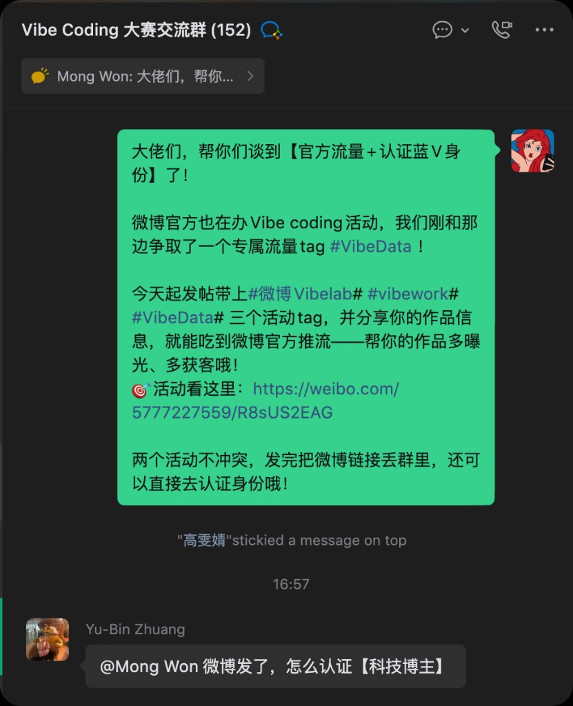
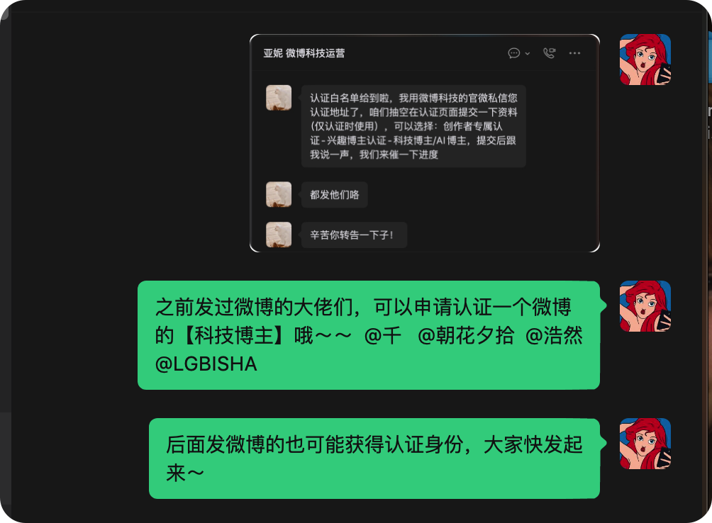
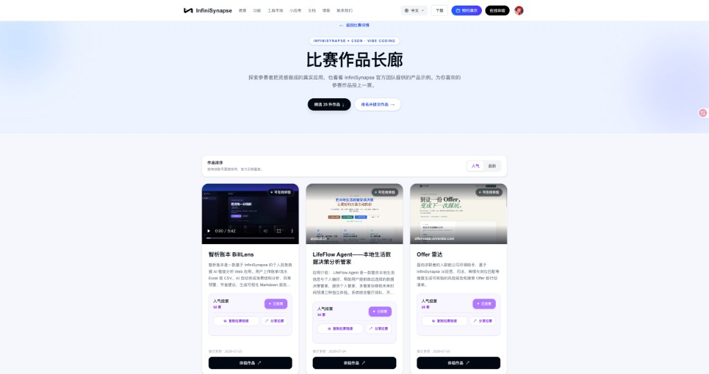
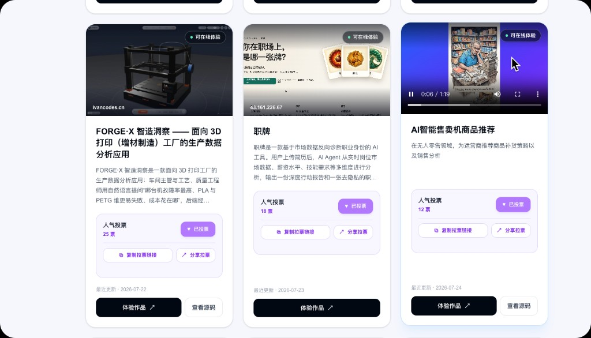
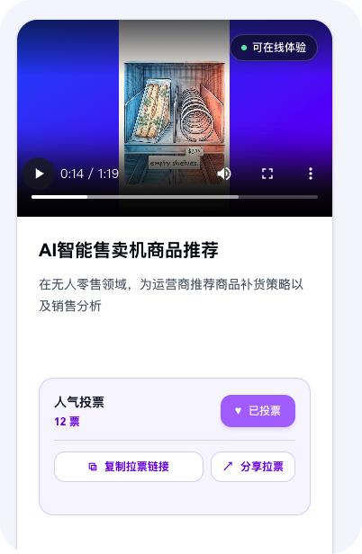

7 月 31 日就要截止啦。 作品交上去当然重要，但评委除了看「好不好用」，也会偷偷看一眼——有没有真人在玩、有没有被更多人看见。
朋友圈、小红书该发还是要发（熟人场不能丢）。不过这几天，我们又偷偷给大家谈成了几条参赛选手专属的小通道：微博官方加热 + 蓝 V 白名单、长廊拉票、 Demo 视频上架。
这篇很短，就告诉你：点哪里、带什么 Tag 、发完找谁～
⚡ 先给你一颗定心丸
提分不一定靠通宵加功能。让更多真人看见、点开、用一用，往往比闷头再塞三个按钮更管用。下面三条按「省事程度」排好了——有 10 分钟，就能先搞定第一条。
达标线你大概听过：能跑、有场景、真接了 InfiniSynapse API 。
想冲一冲名次，其实还多看两样小东西——
所以发内容不是「表演运营」，是帮你的小作品多露个脸。熟人场靠朋友圈 / 小红书；下面三条，是我们特地帮大家挖来的加分小路。
说白了就一句：Tag 带齐，就有机会蹭上微博官方流量；发得认真，还有机会申请蓝 V 。
我们跟微博科技运营聊完，给参赛选手争取到了这些：

群里原话：带齐 Tag → 丢链接 → 走认证，超短链路
#微博 Vibelab#
- #vibework#
- #VibeData#💡 已经有同学拿到认证资格啦
目前至少有 4 位选手进了白名单（群里也点名同步过）。后面发的一样有机会——大门没关，先动起来的人更香。

和微博科技运营沟通后的小进展，可可爱爱的实锤
值不值得？
官方加热能带来真实访客；蓝 V 比赛结束了也还在，对自己获客、个人品牌都挺划算的。
参考活动帖：https://weibo.com/5777227559/R8sUS2EAG[1]
作品长廊[2] 不只是展览柜——人气投票已经开跑，票数会作为最终评定的参考之一哦。
每张作品卡上都有这些小按钮：
🖼️ 作品长廊投票示意


长廊：能玩、能投、能分享；拉票链接一键复制
投票当然不是唯一标准。但作品差不多时，真实用户和曝光，往往就是拉开差距的那一点点。
长廊入口：https://infinisynapse.cn/contest/vibe-coding/gallery[3]
很多访客（包括评委）打开长廊时，未必有耐心从零摸索你的产品。
录一段 30 秒～ 2 分钟的简单 Demo，私信发给运营同学，我们会尽量帮你挂到作品长廊。别人一眼就明白：你解决啥问题、核心流程怎么走。
挂上之后大概长这样——封面直接播 Demo ，下面还能顺便拉票：

长廊支持挂 Demo ；访客不用从零点点点，几秒就能看懂
对着念也完全 OK ：
竖屏横屏都行；手机录屏 + 口述就很好。有字幕加分，没有也没关系。
💡 录得清楚，还有机会被官方转发
节奏干净、一眼能懂的 Demo ，除了挂在长廊，也有机会被官方渠道再推一轮——等于白嫖曝光，谁不爱。
| 动作 | 大概耗时 | 你能得到什么 |
|---|---|---|
| 微博带 3 个 Tag + 丢群链接 | 10 ～ 20 分钟 | 官方流量机会 + 蓝 V 白名单资格 |
| 长廊复制链接拉票 | 5 分钟起 | 票数进评定参考 + 真实访问 |
| 录 Demo 私信运营 | 30 ～ 60 分钟 | 长廊更好懂你，优质视频或被官转 |
熟人场别丢：朋友圈、小红书该发还发。上面三条，帮你触达陌生人 + 官方流量池。
别把「运营」想成额外作业。你都把应用做出来了——让它被看见、被点开、被用一下，本来就是产品闭环的一部分呀。
截止 7 月 31 日。三条里，至少先做完「微博 Tag + 长廊拉票」；有余力再补个小 Demo 。
报名 / 提交：https://infinisynapse.cn/contest/vibe-coding[4]
作品长廊：https://infinisynapse.cn/contest/vibe-coding/gallery[5]
卡在哪一步，群里喊一声运营就好——我们就是来帮你交、帮你被看见的～
参考链接
[1] https://weibo.com/5777227559/R8sUS2EAG: https://weibo.com/5777227559/R8sUS2EAG
[2] 作品长廊: https://infinisynapse.cn/contest/vibe-coding/gallery
[3] https://infinisynapse.cn/contest/vibe-coding/gallery: https://infinisynapse.cn/contest/vibe-coding/gallery
[4] https://infinisynapse.cn/contest/vibe-coding: https://infinisynapse.cn/contest/vibe-coding
[5] https://infinisynapse.cn/contest/vibe-coding/gallery: https://infinisynapse.cn/contest/vibe-coding/gallery